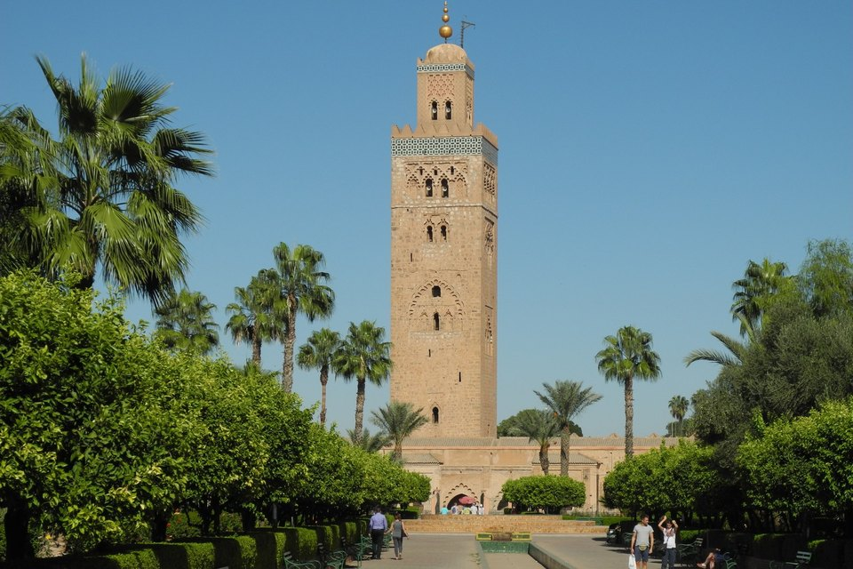
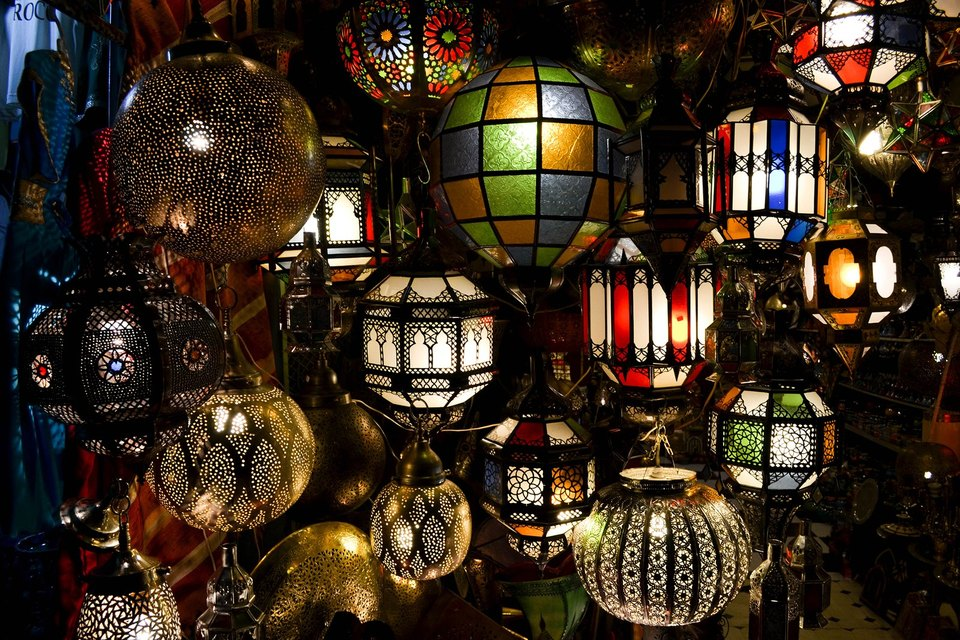
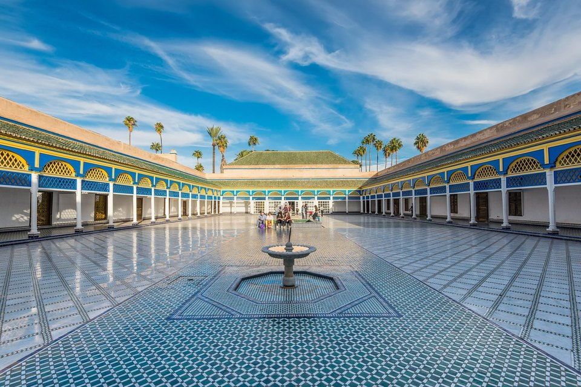
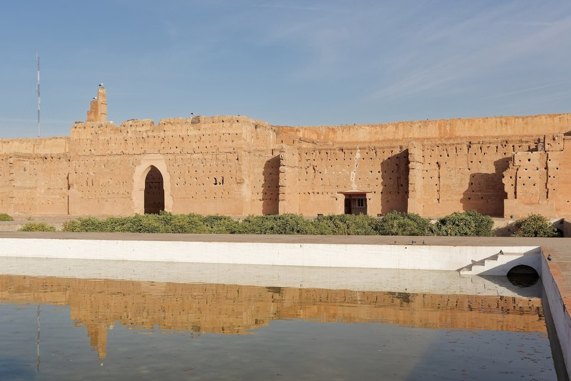
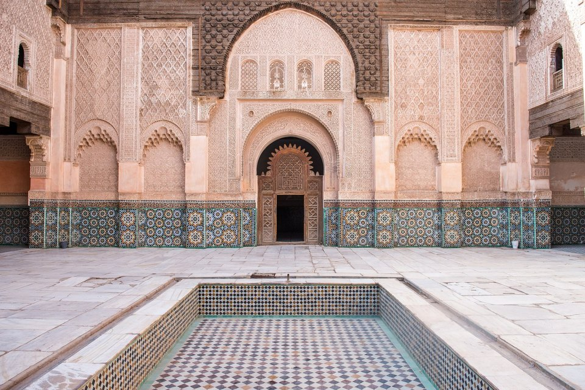
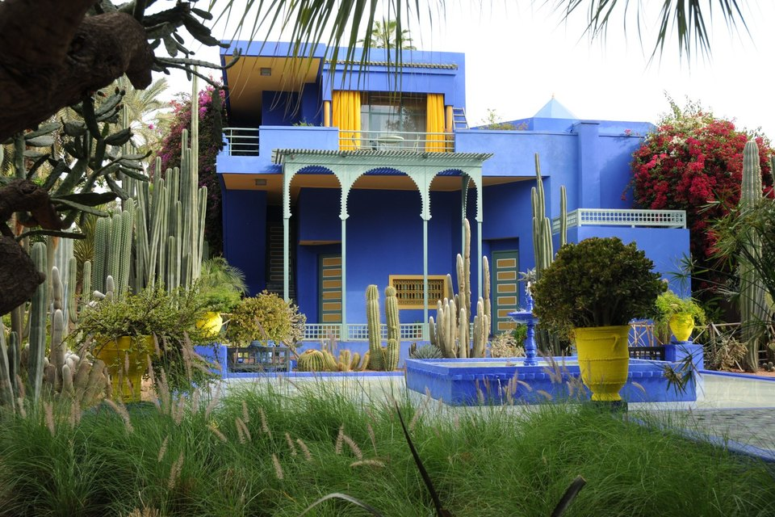

Morocco audio guides
Play free guides here. Buy the rest and listen in your browser.
Marrakech

Koutoubia & Jemaa el-Fna
Marrakech

Marrakech souks and northern medina
Marrakech

Bahia Palace, Marrakech
Marrakech

El Badi Palace
Marrakech

Saadian Tombs, Marrakech
Marrakech

Ben Youssef Madrasa, Marrakech
Marrakech

Jardin Majorelle, Marrakech
Marrakech
Fez, Meknes & Volubilis


Rabat & Casablanca


Chefchaouen, Essaouira & the South
No Morocco guide matches that.